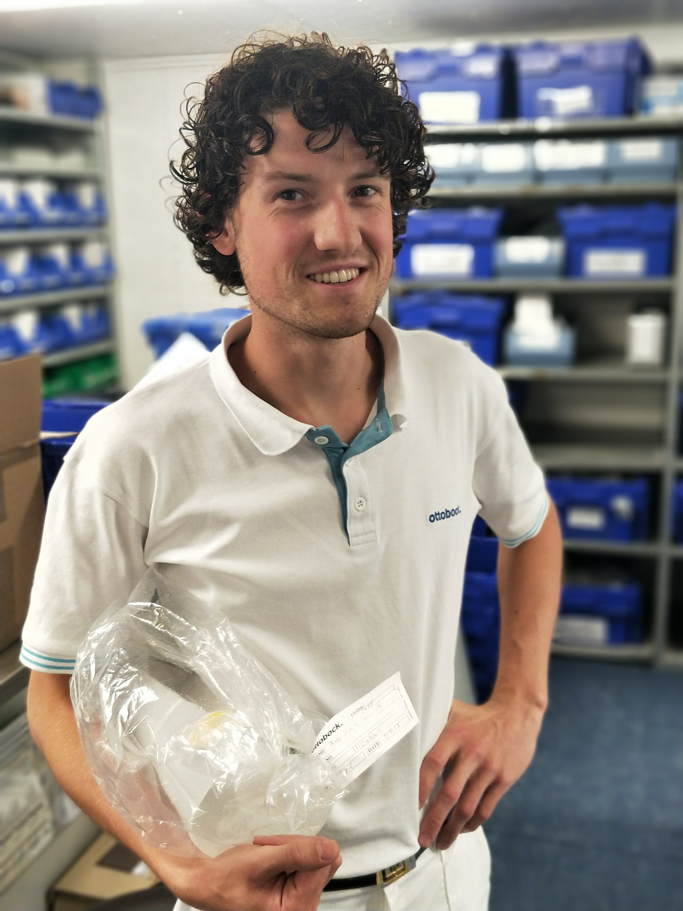
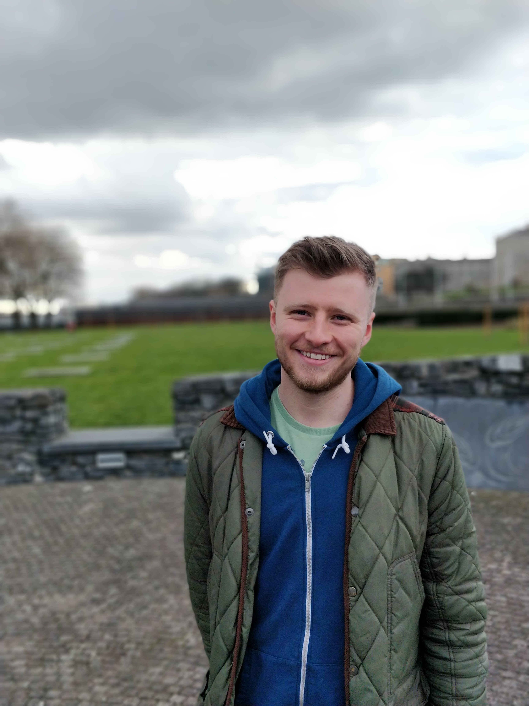

Welcome to the Cork Prosthetic Clinic. We are a government and public-funded charity that provide Prosthetic and Orthotic treatment for patients in Cork and Munster. Founded in 1998, we are based in St Mary's Orthopaedic Hospital campus on the north side of cork city.
We see a wide variety of patient. Some of our established service users have been attending our clinic since we started in 1998, while our doors are always open to primary amputees.
We run a high actiivity clinic every month, where we focus on speciality prostheses for running, snowboarding, fishing etc. We have made prostheses for patients that have competed in the 2016 Summer Paralympic and 2014 Winter paralympic gammes. All of our manufacturing is done by our clinicians on-site, where we are able to make upper and lower-limb carbon-fibre prostheses.
Kieran Graduated from the University of Salford in 2014 with a BSc(Hons) in Prosthetics & Orthotics. He worked for a year at the Birmingham Royal Orthopaedic Hospital before moving to Ireland. He has been the lead clinician at the Cork Prosthetic Clinic for the last 4 years. His special interests include lower limb biomechanics, mecatronic ankles, and microprocessor knees.
Jack started working in the Cork Prosthetic Clinic in 2017, doing both upper and lower limb Prosthetics as well as Orthotics. Jack started his studies at the University of Strathclyde in Glasgow, and recently completed a MSc in Human Locomotion and Biomechanics from the University of Bristol. His interests lie in MSK and lower limb orthotics, as well as upper limb prosthetics.